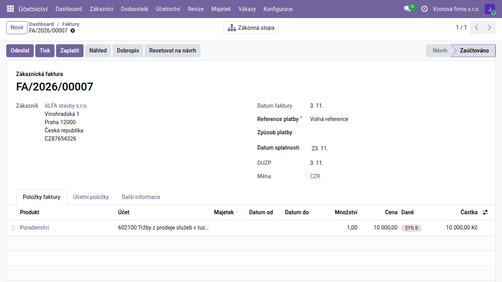
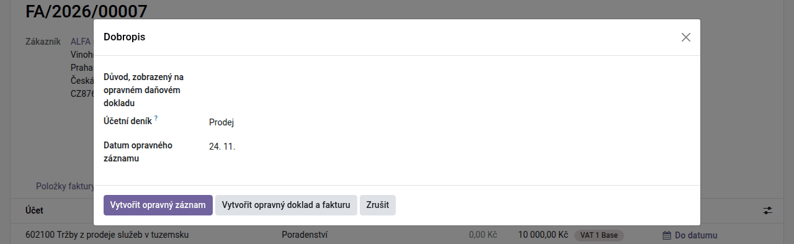
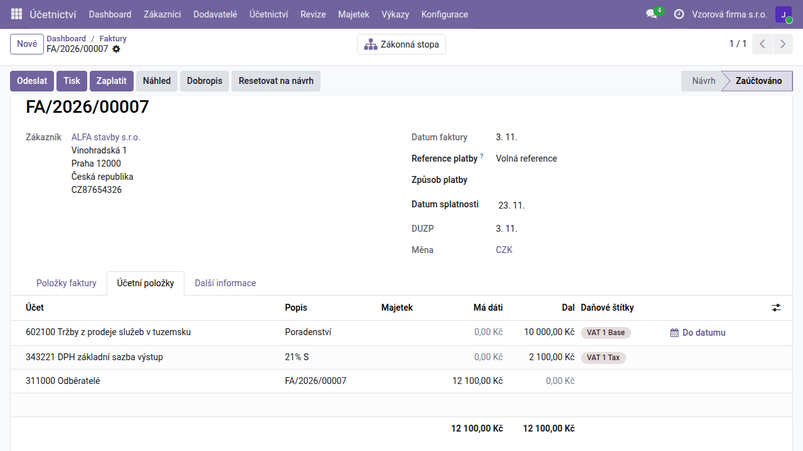

Návod k úloze
Denní agenda
Vystavené a přijaté faktury, opravné daňové doklady, zálohové faktury, platby a interní doklady — jak se každý z nich v Odoo vytvoří, jak se zaúčtuje a co k němu přidává česká lokalizace.
K čemu tento návod slouží
Doklady každého dne, jeden po druhém: na co kliknout, která pole jsou důležitá pro české účetnictví a DPH, co se stane po potvrzení a na které účty se doklad zaúčtuje. Samotné pojmy — účetní záznam, účetní položka, účetní deník — vysvětluje Odoo pro českého účetního.
Zaúčtování je ukázáno pro 10 000 Kč bez daně při 21 % DPH, na účtech, které Odoo používá hned po instalaci české lokalizace. Odkud se který účet bere a jak vše nastavit, aby se každý doklad zaúčtoval správně bez ručních zásahů, popisuje Nastavení předkontací.
Vystavená faktura
Účetnictví → Zákazníci → Faktury → Nové:
- Zákazník. Firemní zákazník potřebuje na kontaktu IČO a DIČ —
tisknou se na faktuře a kontrolní hlášení zákazníka identifikuje podle
DIČ. Na partnera, kterého veřejný rejstřík vede jako zaniklého nebo
s přerušenou činností, Odoo upozorní
(
l10n_cz_trade_registry). - Datum faktury (datum vystavení), DUZP a Platební podmínky nebo Datum splatnosti. Přiznání k DPH a kontrolní hlášení berou období z DUZP a řídí se jím i datum zaúčtování. Nová faktura v něm má dnešní datum: změňte ho, pokud se plnění uskutečnilo jiný den.
- Položky faktury: produkt nebo popis, množství, cena, Daně. Účet se bere z produktu a fiskální pozice zákazníka (tuzemsko, EU, mimo EU) podle potřeby zamění daně a účty — co jsou fiskální pozice.
- Potvrdit. Faktura dostane číslo a vyplní se z něj Variabilní symbol (karta Další informace, spolu s konstantním a specifickým symbolem).

Odeslat nebo Tisk vytvoří český daňový doklad: IČO a DIČ obou stran,
DUZP, platební symboly a zákonný text u osvobozeného plnění nebo přenesení
daňové povinnosti („daň odvede zákazník“). Text, který lokalizace sama
nevytiskne — odkaz na smlouvu, zvláštní režim — patří do pole Zákonná
poznámka faktury (ručně) na kartě Položky faktury. Podrobnosti:
l10n_cz_invoice.
Zaúčtování (tuzemsko, 21 %):
| Účet | MD | D | Odkud |
|---|---|---|---|
| 311000 Odběratelé | 12 100 | Účet pohledávek zákazníka | |
| 604000 Tržby za zboží | 10 000 | Účet výnosů produktu, jeho kategorie nebo společnosti | |
| 343221 DPH základní sazba výstup | 2 100 | daň 21% G |
Řádek výnosu nese daňový štítek VAT 1 Base, řádek DPH VAT 1 Tax — řádek 1 přiznání k DPH. Po instalaci jde každý prodej na 604000 — i služby. Tržby za služby (602) a vlastní výrobky (601) se nastavují na kategorii produktů: Nastavení předkontací.
Faktura zákazníkovi z EU s DIČ se zaúčtuje bez DPH, s daní 0% EU G (štítek VAT 20) nebo 0% EU S (VAT 21), a tržba za zboží jde na 604200 místo 604000.
Opravný daňový doklad
Na potvrzené faktuře se tlačítko Dobropis zeptá na Důvod, zobrazený na opravném daňovém dokladu a Datum opravného záznamu:
- Vytvořit opravný záznam vytvoří opravný daňový doklad na celou fakturu a oba doklady spáruje — faktura je tím vyrovnána.
- Vytvořit opravný doklad a fakturu udělá totéž a otevře novou fakturu v návrhu, pro opravu, která původní doklad nahrazuje.

Pro částečnou opravu (sleva, vrácené zboží) vytvořte opravný doklad přes Vytvořit opravný záznam, vraťte ho do návrhu, upravte řádky a znovu potvrďte. Před potvrzením zkontrolujte DUZP opravného dokladu: rozhoduje o období DPH, do kterého oprava patří.
Skonto za včasnou úhradu se řeší také opravným daňovým dokladem: skonto z platebních podmínek Odoo nepoužívejte — viz Nastavení předkontací.
Z pohledu DPH je to opravný daňový doklad: nese důvod opravy a odkazuje na původní fakturu.
Zaúčtování. Česká lokalizace zapíná Storno účetnictví (storno mínusovým zápisem), takže opravný doklad se účtuje na stejné strany jako faktura, zápornými částkami:
| Účet | MD | D |
|---|---|---|
| 311000 Odběratelé | −12 100 | |
| 604000 Tržby za zboží | −10 000 | |
| 343221 DPH základní sazba výstup | −2 100 |
Obraty účtů tak ukazují skutečné tržby, ne tržby nafouknuté opravnými doklady na opačné straně. V přiznání k DPH opravný doklad sníží tytéž řádky, které faktura naplnila (zde řádek 1).
Oprava daně u nedobytné pohledávky není běžný opravný doklad: označte ji
v poli Oprava u nedobytné pohledávky na kartě Další informace a vykáže
se na řádku 33 nebo 34 přiznání a v kontrolním hlášení bez ohledu na částku
(l10n_cz_statutory).
Přijatá faktura
Účetnictví → Dodavatelé → Přijaté faktury → Nové:
- Dodavatel a Reference faktury — číslo dokladu dodavatele, které kontrolní hlášení uvádí v oddílu B.2. Variabilní symbol se vezme z jeho číslic; přepište ho, žádá-li dodavatel jiný.
- Datum přijaté faktury, Datum zaúčtování a DUZP — předvyplněné dnešním datem; zadejte DUZP z dokladu dodavatele.
- Řádky a daně jako na vystavené faktuře; dodavatel z EU dostane přes svou fiskální pozici daně se samovyměřením. O tuzemském přenesení daňové povinnosti (§ 92a) rozhoduje daň na produktu, ne fiskální pozice.
- Potvrdit.
Co lokalizace přidává na přijaté faktuře:
- Spolehlivost dodavatele a Kontrola bankovního účtu — při zaúčtování
faktury se v registru Finanční správy ověří, zda dodavatel není nespolehlivý
plátce a zda je účet v poli Banka příjemce mezi jeho zveřejněnými účty.
Odpověď zůstane na faktuře; riziko zobrazí upozornění a nikdy vás
nezablokuje. Viz
l10n_cssk_payment_reliability. - Upozornění, když veřejný rejstřík vede dodavatele jako zaniklého nebo
s přerušenou činností —
l10n_cz_trade_registry.
Na vystavené faktuře se navíc zobrazí upozornění, když tuzemské přenesení
daňové povinnosti míří na zákazníka, který není plátce
(l10n_cz_vat_registration).
Zaúčtování (tuzemsko, 21 %):
| Účet | MD | D | Odkud |
|---|---|---|---|
| 504000 Prodané zboží | 10 000 | Účet nákladů produktu, jeho kategorie nebo společnosti | |
| 343121 DPH základní sazba vstup | 2 100 | daň 21% (zboží) | |
| 321000 Dodavatelé | 12 100 | Účet závazků dodavatele |
Řádky nesou štítky VAT 40 Base a VAT 40 Total — řádek 40 přiznání k DPH. Po instalaci jde každý nákup na 504000 — i služby, energie a materiál. Řádek bez produktu dostane účet nejčastěji použitý s tímto dodavatelem a teprve potom 504000. Jak to nastavit: Nastavení předkontací.
U služby od dodavatele z EU zamění fiskální pozice Intra-Community daň za daň se samovyměřením a DPH se zaúčtuje na oba účty DPH:
| Účet | MD | D |
|---|---|---|
| 518000 Ostatní služby | 10 000 | |
| 343121 DPH základní sazba vstup | 2 100 | |
| 343221 DPH základní sazba výstup | 2 100 | |
| 321000 Dodavatelé | 10 000 |
V přiznání se vykáže na řádku 5 (daň) a řádku 43 (odpočet). Zda jde o službu, nebo o pořízení zboží — a tedy které řádky — určuje daň na produktu (varianta pro služby, nebo pro zboží): Nastavení předkontací.
Chcete-li odpočet uplatnit v pozdějším období, než ve kterém fakturu
zaúčtujete, vyplňte na ní Deklarované období DPH
(l10n_cssk_core).
Zálohové faktury
Česká záloha jsou tři doklady a účtují se jen poslední dva:
- Zálohová faktura — výzva k platbě. Na potvrzené prodejní objednávce Vytvořit zálohovou fakturu: celá částka, procento nebo pevná částka. Čísluje se ADV00001…, tiskne se s platebními údaji a neúčtuje se.
- Daňový doklad k přijaté platbě. Když peníze dorazí — Registrovat platbu na záloze, nebo spárování z banky — nabídne záloha Vytvořit fakturu; daňový doklad jde do deníku Daňové doklady k přijatým platbám a na účet přijatých záloh (324). DPH se přiznává ke dni přijetí platby.
- Vyúčtovací faktura. Objednávku vyfakturujte jako obvykle: každá zaplacená záloha se odečte na vlastním záporném řádku i s DPH, která z ní už byla přiznána, takže se DPH odvede jednou.
Zálohy placené dodavatelům fungují stejně z nákupní objednávky a přijatá
faktura se vyrovná tlačítkem Odečíst zálohové faktury. Podrobnosti včetně
záloh bez objednávky a dlouhodobých záloh:
sale_order_advance_invoice
a purchase_order_advance_invoice.
Zaúčtování přijaté zálohy 12 100 Kč (10 000 Kč + 21 % DPH):
| Doklad | Účet | MD | D |
|---|---|---|---|
| Platba | 221 Banka (u ručně zadané platby 221002 Čekající platby) | 12 100 | |
| 324001 Přijaté zálohy – zúčtování (daňový doklad) | 12 100 | ||
| Daňový doklad k přijaté platbě | 324001 Přijaté zálohy – zúčtování (daňový doklad) | 12 100 | |
| 324000 Přijaté provozní zálohy | 10 000 | ||
| 343221 DPH základní sazba výstup | 2 100 | ||
| Vyúčtovací faktura | 604000 Tržby za zboží | 10 000 | |
| 324000 Přijaté provozní zálohy | −10 000 | ||
| 311000 Odběratelé | 0 |
Na účtu 324001 se platba potká se svým daňovým dokladem a oba se spárují. Účet 324000 drží zálohu bez DPH, dokud ji vyúčtovací faktura nevyrovná; na vyúčtovací faktuře se DPH z plnění a DPH už přiznaná ze zálohy vyruší, takže se žádná DPH neúčtuje dvakrát. Při částečné záloze zůstane doplatek na 311000. Dlouhodobá záloha jde na 475000 místo 324000. Zálohy placené dodavatelům se účtují zrcadlově přes 314001 a 314000.
Platby
Zaplatit na potvrzené vystavené nebo přijaté faktuře zaznamená platbu: Účetní deník (banka nebo pokladna), Částka, Datum platby, Poznámka a Vytvořit platbu. Faktura se označí jako zaplacená a s platbou se spáruje. Platba, která přijde bankou, se místo toho páruje z bankovního výpisu — Bankovní účty.
Zaúčtování. Ručně zadaná platba ještě není pohyb na bankovním účtu, proto jde přes přechodnou analytiku bankovních účtů:
| Doklad | Účet | MD | D |
|---|---|---|---|
| Platba od zákazníka | 221002 Čekající platby | 12 100 | |
| 311000 Odběratelé | 12 100 | ||
| Platba dodavateli | 321000 Dodavatelé | 12 100 | |
| 221003 Čekající odchozí platby | 12 100 |
Když přijde bankovní výpis, jeho řádek se spáruje s platbou: 221001 Banka proti 221002 nebo 221003, čímž se tyto účty vyrovnají. Pokud platbu nezadáte a řádek výpisu spárujete rovnou s fakturou, je to 221001 přímo proti 311000 nebo 321000. Zůstatek účtů 221002 a 221003 jsou tedy platby, které ještě nejsou na výpisu.
Interní doklad
Zápis, za kterým není vnější doklad — časové rozlišení, převod, oprava — je interní doklad:
- Účetnictví → Účetnictví → Transakce → Účetní záznamy → Nové, deník Ostatní účetní operace.
- Popis případu, Datum zaúčtování a řádky: účet, Popis, strana MD nebo D.
- Zaúčtovat a poté vytisknout přes ozubené kolečko: ⚙ → Tisk → Interní / interný doklad. Nese náležitosti, které § 11 zákona o účetnictví požaduje od účetního dokladu, a řádky pro podpisy.
Zde se účty zadávají ručně — interní doklad je jediný z těchto dokladů, kde účet volíte sami.
Pro opakované případy — peníze na cestě přes 261, přeúčtování schváleného
výsledku hospodaření — vytvoří Účetnictví → Účetnictví → Vytvořit zápis
podle předkontace z jedné částky vyrovnaný návrh:
l10n_cz_account_move_template.
Kontrola před potvrzením
Karta Účetní položky na faktuře ukazuje už v návrhu přesně ty řádky, které se zaúčtují — účty, strany MD a D a daňové štítky. Dokud nejsou nastaveny předkontace, je to nejrychlejší kontrola, že služba nejde na 604000 a faktura za energii na 504000.
